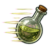
Fast Item Creation D
D-rank passive. Alchemy work is 10% faster.
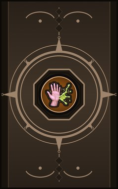
Technique trees › Crafting arts
20 techniques · Ninjutsu tab
Open to every ninja. How high a ninja can go depends on their ninja build.

D-rank passive. Alchemy work is 10% faster.
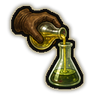
C-rank passive. Alchemy work is another 10% faster.
C-rank passive. Alchemy work is another 10% faster.
B-rank passive. Alchemy work is 15% faster and research 5% faster.
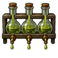
A-rank passive. Alchemy work is 20% faster.
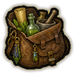
A-rank passive. Alchemy work is 15% faster and general work 5% faster.
C-rank passive. Brewing is 25% faster.
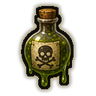
C-rank passive. Poisons and drugs are made 25% faster.
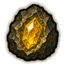
C-rank passive. Crystalmancy is 20% faster, and mining yields 10% more.
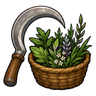
B-rank passive. Harvesting plants yields 15% more.
C-rank passive. Toxic resistance +20%.
C-rank passive. Burns from acid and fire are lessened: heat armour +10%.
C-rank passive. Notices things others miss: aiming 4% faster, melee dodge +2.
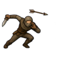
C-rank passive. Ducks and weaves: melee dodge +3, accuracy +1.
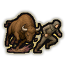
C-rank passive. Melee dodge +4.
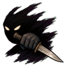
C-rank passive. Melee damage +8%.
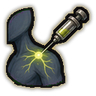
B-rank passive. Melee hit chance +3, melee damage +5%.
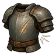
C-rank passive. Small wounds barely matter: incoming damage -4%.
A-rank passive. Melee dodge +6.
C-rank passive. Quick hands: manipulation +5%.